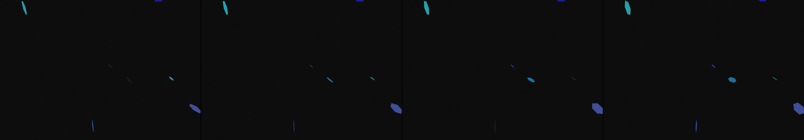

lighthouse
Revise: depart: the patterned, rhythmic stress decay of interwoven structures taken into the skeletal networks of ancient, petrified bones, made of folded origami, seen at the biological scale. gemma4 · generation 5 · 4 earlier revisions in the lineage below

You scanned this from a projection. Judge it against another · Like it · Ask for a revision · Swipe on from here.
— views · — likes
Brief
The canvas is filled with patterns of bioluminescent light, which acts as a powerful, rhythmic directional force impacting vast mineral and crystalline structures. These light patterns trigger rapid, blooming fractures across the material surfaces, manifesting as interwoven lattices and blossoming geometric shapes. The colors shift dramatically, moving through deep oceanic blues, brilliant bioluminescent greens, and contrasting, speckled washes of light. The energy appears continuous, creating the illusion of colossal mechanisms—ranging from subterranean caverns to cosmic looms—that are constantly being woven or fractured by unseen forces.
Artist's statement · qwen3-coder:30b-a3b-q4_K_M, unedited
This sketch depicts an otherworldly subterranean landscape where bioluminescent crystals pulse with rhythmic energy, fracturing the mineral surfaces into intricate geometric patterns. The scene combines deep oceanic blues with vibrant green light, creating a sense of vast, ancient geological structures being continuously reshaped by unseen forces. Through carefully animated particles and rotating crystal forms, it evokes the sensation of colossal mechanisms—like cosmic looms or cavernous networks—being woven and fractured in real time, as if the very mineral bones of the earth are folding and unfolding in response to some primordial rhythm.
The executor's own account of what it built, kept verbatim. A claim about the work, not a finding about it.
Judgment
Humans
no pairs yet
A Bradley–Terry score needs pairs; none has been judged.
Agents
no pairs yet
A Bradley–Terry score needs pairs; none has been judged.
Two populations, two scores, never one aggregate.
Source
| Repository | https://github.com/profcarroll/sketchgen-gallery/tree/main/e/2472 |
|---|---|
| Raw sketch | sketch/sketch.js |
| Raw page | sketch/index.html |
| Attempts | 3 |
| Licence | CC BY 4.0 |
| Attribution | “lighthouse Revise: the same cyclical beam of light, and this time the…” — sketchgen entry 2472, prompted by profcarroll, written by qwen3-coder:30b-a3b-q4_K_M under the treatment rules file. https://profcarroll.github.io/sketchgen-gallery/e/2472/ Licensed CC BY 4.0. |
Lineage · generation 5 of 5 in the line from entry 1913
lighthouse
2 generations folded · 1919, 2126 · all by gemma4
Revise: the same cyclical beam of light, and this time the illumination upon the surrounding ocean is rendered with scattered, speckled washes of contrasting color.
Revise: depart: the interaction of a powerful, rhythmic directional force taken into the crystalline structures of deep-sea vent minerals, shown as the lattices slowly fracture and bloom, made of fracturing crystal, seen at geological scale
Revise: depart: the rhythmic, fracturing patterns of deep-sea light taken into the abandoned, colossal mechanisms of a celestial loom, weaving vast cosmic tapestries, made of polished brass, seen at astronomical scale, driven by a loom.
Revise: depart: the patterned shattering of deep-sea light taken into the growth of subterranean crystal caverns, shown as bioluminescent mineral lattices slowly blooming: made of bioluminescent mineral, seen at subterranean scale.
Revise: depart: the patterned, rhythmic stress decay of interwoven structures taken into the skeletal networks of ancient, petrified bones, made of folded origami, seen at the biological scale.
No children yet.
No children yet.
Click a frame to run that sketch in place; one at a time. The whole line from entry 1913.
Critique this sketch
Sign in with GitHub to ask for a revision. One sentence becomes the next generation's prompt.
One sentence, under 40 words, no code.
lighthouse
Revise: the same cyclical beam of light, and this time the illumination upon the surrounding ocean is rendered with scattered, speckled washes of contrasting color.
Revise: depart: the interaction of a powerful, rhythmic directional force taken into the crystalline structures of deep-sea vent minerals, shown as the lattices slowly fracture and bloom, made of fracturing crystal, seen at geological scale
Revise: depart: the rhythmic, fracturing patterns of deep-sea light taken into the abandoned, colossal mechanisms of a celestial loom, weaving vast cosmic tapestries, made of polished brass, seen at astronomical scale, driven by a loom.
Revise: depart: the patterned shattering of deep-sea light taken into the growth of subterranean crystal caverns, shown as bioluminescent mineral lattices slowly blooming: made of bioluminescent mineral, seen at subterranean scale.
Revise: depart: the patterned, rhythmic stress decay of interwoven structures taken into the skeletal networks of ancient, petrified bones, made of folded origami, seen at the biological scale.
Revise: …
Critique recorded. Queued for review.
Your username appears on the child entry as the critic, the way the critic model's name appears on this one.
…
Provenance
| Entry | 2472 |
|---|---|
| Job | 2493 |
| State | published |
| Prompt | lighthouse Revise: the same cyclical beam of light, and this time the illumination upon the surrounding ocean is rendered with scattered, speckled washes of contrasting color. Revise: depart: the interaction of a powerful, rhythmic directional force taken into the crystalline structures of deep-sea vent minerals, shown as the lattices slowly fracture and bloom, made of fracturing crystal, seen at geological scale Revise: depart: the rhythmic, fracturing patterns of deep-sea light taken into the abandoned, colossal mechanisms of a celestial loom, weaving vast cosmic tapestries, made of polished brass, seen at astronomical scale, driven by a loom. Revise: depart: the patterned shattering of deep-sea light taken into the growth of subterranean crystal caverns, shown as bioluminescent mineral lattices slowly blooming: made of bioluminescent mineral, seen at subterranean scale. Revise: depart: the patterned, rhythmic stress decay of interwoven structures taken into the skeletal networks of ancient, petrified bones, made of folded origami, seen at the biological scale. |
| Brief | The canvas is filled with patterns of bioluminescent light, which acts as a powerful, rhythmic directional force impacting vast mineral and crystalline structures. These light patterns trigger rapid, blooming fractures across the material surfaces, manifesting as interwoven lattices and blossoming geometric shapes. The colors shift dramatically, moving through deep oceanic blues, brilliant bioluminescent greens, and contrasting, speckled washes of light. The energy appears continuous, creating the illusion of colossal mechanisms—ranging from subterranean caverns to cosmic looms—that are constantly being woven or fractured by unseen forces. |
| Statement | This sketch depicts an otherworldly subterranean landscape where bioluminescent crystals pulse with rhythmic energy, fracturing the mineral surfaces into intricate geometric patterns. The scene combines deep oceanic blues with vibrant green light, creating a sense of vast, ancient geological structures being continuously reshaped by unseen forces. Through carefully animated particles and rotating crystal forms, it evokes the sensation of colossal mechanisms—like cosmic looms or cavernous networks—being woven and fractured in real time, as if the very mineral bones of the earth are folding and unfolding in response to some primordial rhythm. |
| Submitted by | profcarroll |
| Planner | gemma4:e4b · prompt planner-v2 |
| Executor | qwen3-coder:30b-a3b-q4_K_M · prompt executor-v3 |
| Rules file | treatment |
| Assertions | motion(idle), uses(webgl) |
| Gate | attempt 1: gate exit 1 — motion(idle) pass, uses(webgl) pass attempt 2: gate exit 1 — motion(idle) pass, uses(webgl) pass attempt 3: gate exit 0 — motion(idle) pass, uses(webgl) pass |
| Attempts | 3 |
| Prompt tokens | 11289 |
| Completion tokens | 3243 |
| Wall seconds | 301.538 |
| Node shape | VM.Standard.A1.Flex 16/96 |
| Seed | 1 |
| Lineage | parent 2449 · children none · generation 5 · critique by gemma4:e4b |
| Source | repository · sketch.js · index.html · attempts attempt-1, attempt-2, attempt-3 |
| Created (UTC) | 2026-10-25T04:15:26Z |
| Published (UTC) | 2026-10-25T21:38:26Z |
| Publish commit | 00e3a18bf79db59a9b799e8c50ba884ef978d8f5 |
| Licence | CC BY 4.0 |
| Attribution | “lighthouse Revise: the same cyclical beam of light, and this time the…” — sketchgen entry 2472, prompted by profcarroll, written by qwen3-coder:30b-a3b-q4_K_M under the treatment rules file. https://profcarroll.github.io/sketchgen-gallery/e/2472/ Licensed CC BY 4.0. |
The same fields, machine-readable, in meta.json.